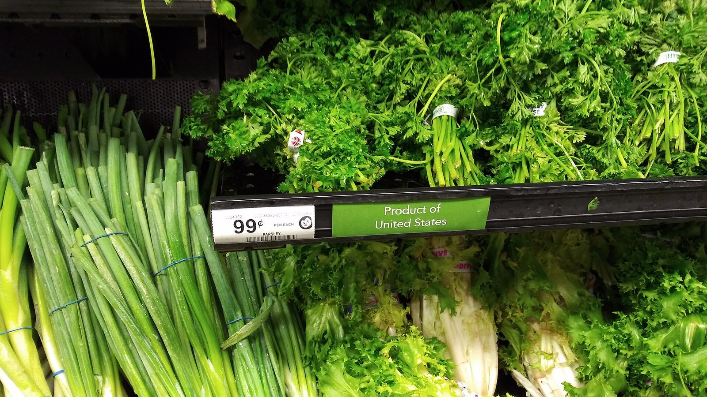

Perché conta: Da settembre la Federal Reserve ha ricominciato ad alzare i tassi, e il mercato sperava che l'inflazione stesse rientrando da sola. Il dato di oggi dice il contrario: i prezzi salgono più di quanto previsto, trascinati dall'energia. Significa tassi alti più a lungo — e per chi ha un mutuo a tasso variabile, un fondo azionario o semplicemente la spesa da fare, è una notizia che si sente.
Seduta pesante a New York il 14 ottobre 2026. L'S&P 500 chiude a 7.718,94 punti, in calo dell'−1,11%, il Nasdaq Composite scende a 26.692,87 (−1,88%) e il Russell 2000 delle società a piccola capitalizzazione cede l'−1,93% a 2.729,53. Regge solo il Dow Jones, praticamente invariato a 51.621,48 (−0,09%, −48,62 punti). La causa è una sola: l'inflazione americana di settembre è salita più delle attese.
Il dato che ha rovesciato la seduta
Il CPI (Consumer Price Index, l'indice dei prezzi al consumo) pubblicato dal Bureau of Labor Statistics ha segnato un aumento dello 0,6% sul mese e del 3,7% su base annua, in accelerazione dal 3,4% di agosto. Gli economisti interpellati da Dow Jones si aspettavano lo 0,6% mensile ma un 3,6% annuo: lo scarto è di un decimo, piccolo in apparenza, ma nella direzione sbagliata.
Anche la componente di fondo ha deluso. Il Core CPI (inflazione di fondo), che esclude alimentari ed energia perché sono le voci più volatili, è salito al 2,6% annuo contro il 2,5% stimato. A spingere il dato principale è stata soprattutto l'energia, il cui indice è aumentato del 5,2%: effetto diretto del conflitto fra Stati Uniti e Iran aperto a fine febbraio, che tiene il greggio sopra i 90 dollari da mesi.
💡 Impara: Core CPI (inflazione di fondo)
Il Core CPI è l'indice dei prezzi al consumo calcolato escludendo alimentari ed energia. L'esclusione sembra arbitraria — sono le voci che pesano di più sulla spesa delle famiglie — ma ha una logica precisa: quei due capitoli oscillano molto per ragioni che la politica monetaria non controlla, come una gelata sui raccolti o una crisi geopolitica. Alzare i tassi non riapre lo Stretto di Hormuz. Il dato di fondo serve quindi alle banche centrali per capire se l'inflazione si sta radicando nel resto dell'economia, dove invece possono intervenire. Nel dato di settembre 2026 la lettura è duplice: il rialzo viene in gran parte dall'energia, ma anche il fondo sale oltre le attese — ed è questa seconda parte che preoccupa la Fed.
| Indice | Chiusura 14 ottobre | Variazione giorno |
|---|---|---|
| S&P 500 | 7.718,94 | −1,11% |
| Nasdaq Composite | 26.692,87 | −1,88% |
| Dow Jones Industrial Average | 51.621,48 | −0,09% (−48,62 pt) |
| Russell 2000 | 2.729,53 | −1,93% |
Una serie che durava da oltre sei anni
Il calo dell'S&P 500 ha un valore statistico che va oltre il singolo punto percentuale: l'indice ha interrotto la serie più lunga da oltre sei anni senza una seduta in ribasso di almeno l'1%. Per mesi il mercato è salito con oscillazioni minime, e questa calma prolungata aveva abituato gli investitori a comprare ogni piccola flessione.
La rottura di una serie così lunga è importante per un motivo tecnico: la bassa volatilità incoraggia strategie che funzionano solo finché i prezzi non si muovono troppo. Quando la volatilità torna, quelle posizioni vanno chiuse in fretta, e le vendite si amplificano da sole. È una delle ragioni per cui la prima seduta negativa dopo una lunga calma tende a essere più brusca del suo motivo scatenante.
Il carattere della giornata è stato quello di un classico risk-off (fuga dal rischio): hanno sofferto più le società tecnologiche e quelle piccole, mentre il Dow — composto da aziende grandi e mature, meno sensibili ai tassi — ha chiuso quasi invariato. Il divario fra il −0,09% del Dow e il −1,93% del Russell 2000 racconta la seduta meglio di qualsiasi commento.
Il balzo dei rendimenti, poi il rientro
Il mercato obbligazionario ha avuto la reazione più spettacolare. Alla pubblicazione del dato il rendimento del Treasury a 10 anni è schizzato da circa il 5,19% fino a sfiorare il 5,33%, per poi ritracciare e chiudere intorno al 5,20%, quasi invariato rispetto alla sera precedente. Un'escursione di quattordici punti base in poche ore, azzerata entro la chiusura.
Anche il dollaro si è rafforzato sulla scia del dato. Il movimento dei rendimenti riflette il ritorno delle scommesse su una nuova stretta: la Fed ha portato i tassi nella fascia 3,75%-4,00% il 16 settembre, primo rialzo in oltre tre anni, e un'inflazione che riaccelera rende più difficile fermarsi. Vale però ricordare il contesto: solo il 2 ottobre un rapporto sull'occupazione molto debole — 29.000 nuovi posti contro i 90.000 attesi — aveva spinto il mercato a dare per quasi certa una pausa. In due settimane il quadro si è capovolto.
💡 Impara: perché i mercati temono l'inflazione da energia
Un'inflazione che nasce dal prezzo dell'energia mette una banca centrale in una posizione scomoda, perché è il tipo di rialzo dei prezzi che non dipende da un'economia troppo calda. Se il greggio sale per un conflitto, le famiglie pagano più benzina e riscaldamento e hanno meno da spendere su tutto il resto: l'inflazione sale e la crescita rallenta nello stesso momento. Alzare i tassi in quella situazione raffredda un'economia già debole senza toccare la causa vera; non alzarli rischia di far entrare il caro-energia nei salari e nei prezzi di tutti gli altri beni, rendendolo permanente. È il dilemma che gli economisti chiamano shock di offerta, e spiega perché i mercati reagiscano male a un dato di inflazione trainato dall'energia anche quando la componente di fondo sembra sotto controllo.
Materie prime e cripto nella stessa direzione
Il rafforzamento del dollaro e la risalita dei rendimenti hanno colpito tutti gli attivi che non pagano cedole. L'oro ha perso l'−1,88% scendendo a 4.083,22 dollari l'oncia, mentre il Bitcoin ha ceduto circa il 2% portandosi in area 81.800 dollari, con un minimo vicino agli 81.450. In controtendenza il petrolio: il WTI ha chiuso in rialzo dell'+1,01% a 95,09 dollari al barile — il che, nella logica della giornata, è parte del problema e non un sollievo.
| Tassi, materie prime e cripto | Valore 14 ottobre | Variazione |
|---|---|---|
| Treasury 10 anni (rendimento) | circa 5,20% | picco intraday 5,33% |
| WTI (contratto novembre) | $95,09 | +1,01% |
| Oro | $4.083,22 | −1,88% |
| Bitcoin | circa $81.800 | −2,00% |
| CPI settembre (annuo) | 3,7% | atteso 3,6% |
Cosa osservare nelle prossime sedute
Il primo punto è la riunione della Federal Reserve: con un'inflazione al 3,7% e un mercato del lavoro in rallentamento, la banca centrale si trova fra due dati che chiedono decisioni opposte. Il secondo è la tenuta del comparto tecnologico, che ha guidato il rialzo degli ultimi mesi e che è il più esposto a un aumento dei rendimenti: il Nasdaq perde quasi il doppio dell'S&P 500 e questo divario merita di essere seguito nelle prossime sedute.
Terzo elemento, il prezzo dell'energia: finché il greggio resta sopra i 90 dollari la componente energetica continuerà a spingere il CPI, e nessuna decisione sui tassi potrà cambiarlo. Da seguire infine l'avvio delle trimestrali, che dirà se gli utili aziendali sono abbastanza solidi da giustificare le valutazioni raggiunte prima di questa correzione.